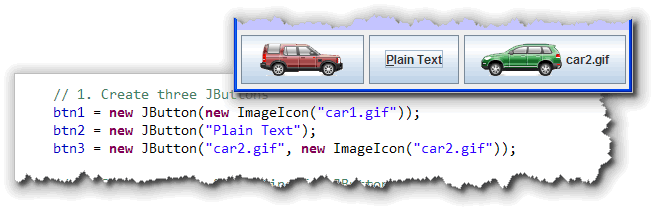
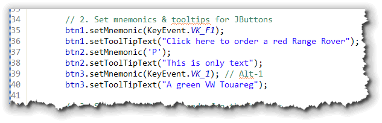
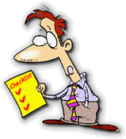
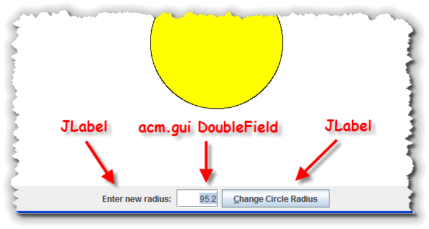
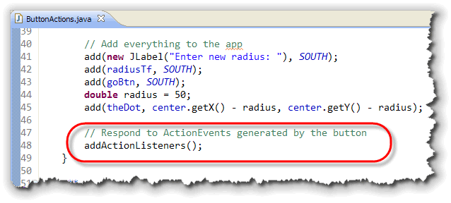
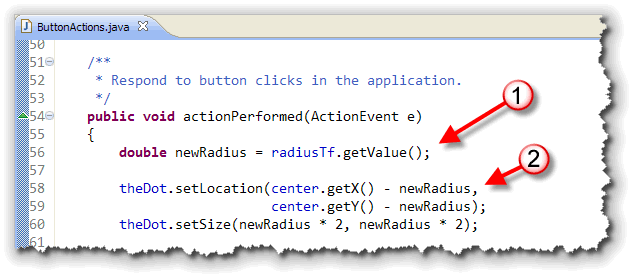
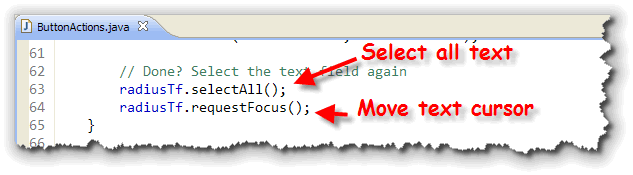
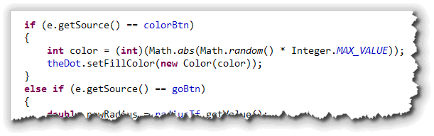
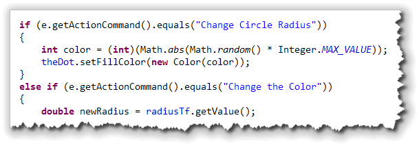

Let's face
it, the JLabel, which you met in the Chapter 8,
really doesn't know a whole lot of
tricks. The JButton's middle name, by contrast,
is action.
If you want something to happen in your Java
program, you use a JButton object
to start it off and then you write a method to carry out the
action you want performed.
Creating buttons is actually a little easier than creating labels, since there is no concept of "alignment". That means you only have to learn four constructors, instead of six:
JButton(); // the default constructor
JButton(Icon); // displays an image
JButton(String); // displays text
JButton(String, Icon); // displays both text and an image
While there is a no-parameter JButton constructor, it
isn't as useful as the JLabel constructor,
since you rarely want to create such an "empty" button.
The other three constructors allow you to
specify the text, icon, or combination of text and icon that
will appear on the button. You use the ImageIcon
class to create an icon for a JButton, just as
you did for the JLabel class.
To see how this works, open the JButtonWorld program from
this chapter's code folder and complete the marked portions of code.
Start by creating three buttons
using each of the last three constructors.

The first button (btn1) has only an icon, the second, (btn2) has only text, while the third, (btn3) has both.Mnemonics and ToolTips
JButtons automatically handle "mnemonic" key
identifiers ("shortcuts" or "hot-keys" for us mere mortals), as well
as tool-tips. Here's the section of code you should add
to JButtonWorld that activates both of those features:

ThesetMnemonic() method is used to assign an
Alt+Key keyboard shortcut to a particular button. If the button
contains text, then the shortcut character will be underlined.
 Use the code
Use the code btn2.setMnemonic('P'); to assign
the keyboard shortcut Alt+P to the plain text
JButton. When the button is displayed, the 'P' in
"Plain Text" is underlined as shown here.
You can use keyboard shortcuts that don't generate a
printable character code by using the virtual key constants
in the KeyEvent class. In my example here, btn1 is
assigned to the Alt+F1 function key combination, while
btn2 is assigned Alt+1.
Tool-Tips
Adding a "tool-tip"—the small help message that appears when your mouse hovers over a component for a few seconds—is even easier than setting a keyboard shortcut.
You just call the method setToolTipText(),
like this:
btn1.setToolTipText("Click here to order a red Range Rover");
 The tool-tip displays your message when it pops up.
The tool-tip displays your message when it pops up.
Try It Yourself
Once you've completed these two sections in JButtonWorld, compile and run the program. Make sure both the hot-keys and the tool-tips work.
JButtons and Events
When a JButton object is clicked, instead of
generating mouse events, it generates
a specific kind of event object called an
ActionEvent.
ActionEvent objects are not specific to buttons; if you press the ENTER key inside a JTextField object, or, if you double-click an entry in a List object, the component will generate an ActionEvent object as well.
To perform an action when a JButton object is
clicked (inside your ACM graphical programs), you only have to
do these three things:

- Make sure that the
java.awt.eventpackage is available, just like you did when working with the different mouse events. - Tell your program to subscribe to
any
ActionEvents generated by theJButtonobjects you've added to your program. In your ACM programs, you'll do this by callingaddActionListeners()from inside yourinit()method. - Add an
actionPerformed()method to your program where you'll respond whenever any of the buttons in your program are selected.
To get a feel for button event-handling, create a new program,
ButtonActions.java, which will be very similar to
the JButtonWorld program from the first part of this section.

Instead of three buttons, though, we'll add aJLabel
and one of the ACM GUI components, the
DoubleField, so that you can interactively change
the radius of the circle displayed on the screen.
Step 1: Import the Packages
As always, you'll also need to import the
package containing the ActionEvent and ActionListener
classes. These listeners are in the same package as the
mouse events: java.awt.event. It's easy to
forget to add this line to the top of your program:
 Notice that in addition to the Java event packages, I also
need to remember to import:
Notice that in addition to the Java event packages, I also
need to remember to import:
- The
acm.guipackage which contains the code for the "enhanced" numeric version of theJTextFieldclass, calledDoubleField. We could useJTextField, of course, but then we'd have to handle converting the radius fromStringtodoubleourselves. - The
javax.swingpackage that contains the Swing GUI components, such asJLabelandJButton.
Step 2: Initialize the Application
Reactive or event-driven programs often do not have a
run() method. Instead, we'll put all of our
code inside the init() method as well as the
event-handlers that will be called as the users interact
with our app. Instead of just looking at the code that
sets up the event-handling, let's look at each of the
main points inside the init() method.
Instance Variables
Our program starts by defining several instance variables
that will be used inside both the init() method as
well as from inside the event-handlers:
 There are fields for each of the GUI components, as well as a
There are fields for each of the GUI components, as well as a
GPoint to store the center of the screen (so we don't
need to calculate it again and again.)
Creating the Objects
The first section inside init() simply calls the
various constructors to create each of the objects associated
with our program's fields:
 The
The GPoint used to keep track of the center of the application
is offset by 20 pixels up from the bottom, to allow for the toolbar at
the bottom of the screen.
Additional Initialization
While each object's constructor is responsible for initializing
the objects you create, often, especially with GUI apps, you'll
find that many components need additional initialization,
such as that shown here:
 In addition to adding a hot-key and tool-tip for the button,
the program sets the fill color for the dot on the screen
as well.
In addition to adding a hot-key and tool-tip for the button,
the program sets the fill color for the dot on the screen
as well.
Adding and Actions
After the objects are created and any initialization is
performed, each of the components is added to the toolbar at the
bottom of the screen. The GPoint is used to calculate
the location of the GOval object:

The last line in theinit() method is the line
the activates the event handling for your buttons. (If you
want to respond to mouse events also, you can add an
addMouseListeners() line as well.)
Step 3: Responding
How will the JButton object, goBtn, notify
you when an ActionEvent occurs? It will send a
particular message, passing along the ActionEvent
object as an argument. The name of the message—and the method
you must write—is actionPerformed(), and you'll
place it inside your class:

In the body of theactionPerformed()
method, you can carry out the actions you want to occur when
goBtn is clicked.
In this case, I:
- Extract the new radius from the
DoubleFieldnamedradiusTf. Note that the ACM GUI component doesn't require me to convert the value, but allows me to read it directly, using itsgetValue()method. - Use the new radius value to first position and then
resize the
GOvalobject on the screen.
Handling the Focus
When the user enters a new radius into the text field, and
then clicks the button, the GUI focus remains on the
JButton object. To go back and enter another
value, the user has to either use the tab key, or click with
the mouse and erase the old value in the text field.
To make your code more user-friendly, you can perform those
two steps using code, each time the actionPerformed()
method is called, like this:

The first line selects all of the text inside the text field, while the second line sends the keyboard focus back to that field. All the user has to do is type a new value.Try It Yourself
Once you've completed the ButtonActions program, run it and then resize the central dot a few times.
Multiple Buttons
If you have multiple buttons inside your application, all of
them will call the same actionPerformed()
method. Inside your method, you'll need to determine which
button actually triggered the event.
You can do that in two ways:
- You can call the
ActionEventparameter'sgetSource()method, and compare theObjectreference that you get back to the button you want to respond to. Here's what that would look like, if you had a second button named colorBtn that changed the oval's color:

- You can call the
ActionEventparameter'sgetActionCommand()method to "read" the text appearing on the button, and differentiate between the buttons that way. This works even if the button was not defined as an instance variable. Here's what that looks like:


Button and Action Event Summary
- To create a
JButtonobject, you import thejavax.swingpackage (like all JFC widgets) and use one of the constructors, specifying the button's text or an icon, or both. - To start listening for button clicks, add the line
addActionListeners()to the end of your ACMinit()method. Make sure all buttons have been created and added to your application before calling the method. - To respond to button clicks write an event handler method
public void actionPerformed(ActionEvent e) {}. The method will be called when your button is clicked. - If your program has multiple buttons, all of them will
call the same
actionPerformed()method. You can determine which button was clicked by using theActionEventparameter and it's methodsgetSource()orgetActionCommand().